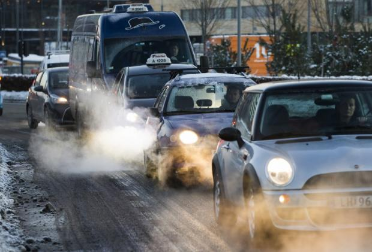
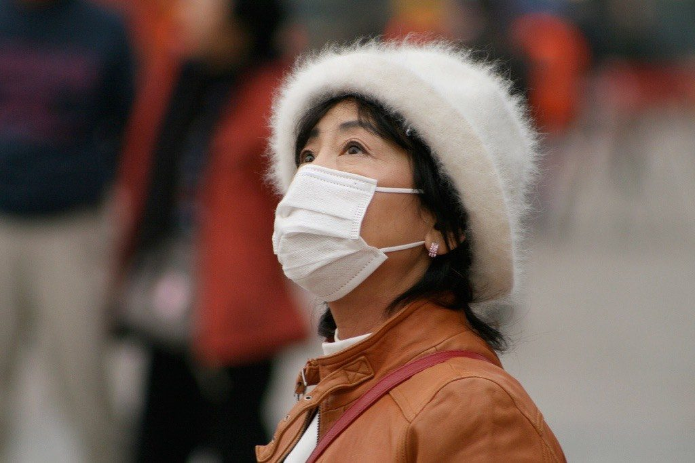
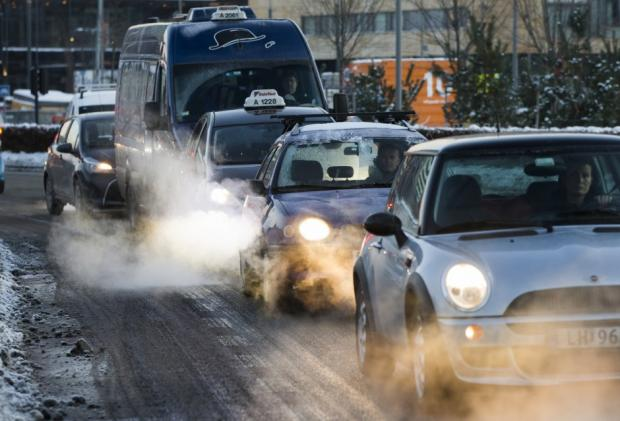
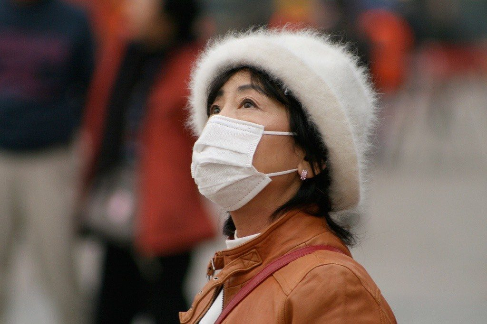

What is Air Pollution?
Air pollution occurs when harmful or excessive quantities of substances
including gases, particulates, and biological molecules are introduced into Earth's atmosphere. It may
cause diseases, allergies and even death to humans; it may also cause harm to other living organisms such
as animals and food crops, and may damage the natural or built environment. Both human activity and natural
processes can generate air pollution.
Indoor air pollution and poor urban air quality are listed as two of the world's worst toxic pollution problems
in the 2008 Blacksmith Institute World's Worst Polluted Places report.According to the 2014 World Health
Organization report, air pollution in 2012 caused the deaths of around 7 million people worldwide,an estimate
roughly echoed by one from the International Energy Agency.
 



______________________________________________________________________________________________________________________________________________________________
Causes of Air Pollution
1. Burning of Fossil Fuels: Sulfur dioxide emitted from the combustion
of fossil fuels like coal,petroleum and other factory combustibles is the major cause of air pollution.
Pollution emitting from vehicles including trucks, jeeps, cars, trains, airplanes cause immense amount of pollution.
2. Agricultural activities:Ammonia is a very common by product from
agriculture related activities and is one of the most hazardous gases in the atmosphere.Use of insecticides, pesticides and
fertilizers in agricultural activities has grown quite a lot.They emit harmful chemicals into the air and can also cause water pollution.
3. Exhaust from factories and industries: Manufacturing industries
release large amount of carbon monoxide, hydrocarbons, organic compounds, and chemicals into the air thereby depleting the quality of air.
Manufacturing industries can be found at every corner of the earth and there is no area that has not been affected by it.
4. Mining operations: Mining is a process wherein minerals below
the earth are extracted using large equipments. During the process dust and chemicals are released in the air causing massive air pollution.
This is one of the reason which is responsible for the deteriorating health conditions of workers and nearby residents.
5. Indoor air pollution:Household cleaning products, painting
supplies emit toxic chemicals in the air and cause air pollution. Have you ever noticed that once you paint walls of your house, it creates
some sort of smell which makes it literally impossible for you to breathe.
______________________________________________________________________________________________________________________________________________________________
Effects of Air Pollution
1. Respiratory and heart problems:The effects of Air pollution are
alarming. They are known to create several respiratory and heart conditions along with Cancer, among other threats to the body. Several
millions are known to have died due to direct or indirect effects of Air pollution.
2. Global warming:Another direct effect is the immediate alterations
that the world is witnessing due to Global warming. With increased temperatures world wide, increase in sea levels and melting of ice
from colder regions and icebergs, displacement and loss of habitat have already signaled an impending disaster.
3. Acid Rain:Harmful gases like nitrogen oxides and sulfur oxides
are released into the atmosphere during the burning of fossil fuels. When it rains, the water droplets combines with these air
pollutants, becomes acidic and then falls on the ground in the form of acid rain.
4. Eutrophication:Eutrophication is a condition where high amount of
nitrogen present in some pollutants gets developed on sea’s surface and turns itself into algae and and adversely affect fish, plants and
animal species. The green colored algae that is present on lakes and ponds is due to presence of this chemical only.
5. Effect on Wildlife:Just like humans, animals also face some
devastating affects of air pollution. Toxic chemicals present in the air can force wildlife species to move to new place and change their habitat.
______________________________________________________________________________________________________________________________________________________________
Solutions of Air Pollution
We can decrease the rate of air pollution by these following ways:
- Use public mode of transportation
- Conserve energy:
- Understand the concept of Reduce, Reuse and Recycle
- Emphasis on clean energy resources
- Use energy efficient devices, etc.
Several attempts are being made world wide on a personal, industrial and governmental levels to curb the intensity at which
Air Pollution is rising and regain a balance as far as the proportions of the foundation gases are concerned. This is a direct attempt at slacking
Global warming. We are seeing a series of innovations and experiments aimed at alternate and unconventional options to reduce pollutants. Air Pollution
is one of the larger mirrors of man’s follies, and a challenge we need to overcome to see a tomorrow.
Go To Main Page